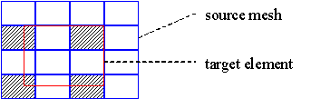

This method will take a value for each node of the target
element from the source element mesh, using the point
interpolation method, with one condition added:
If a node of the target element lies on the edge between two elements of the source mesh, or on a node of the source mesh, only the elements in the source mesh that overlap with the target element contribute in the averaging for the value (see figure).

Only the shaded source elements contribute in the
nodal values for the red target element
This can only be done using non-smoothed nodal values from the source mesh. Any of the three averaging methods can be used.